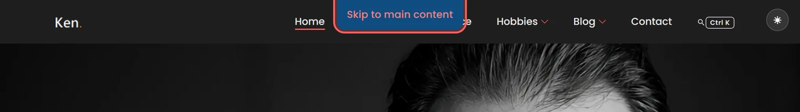
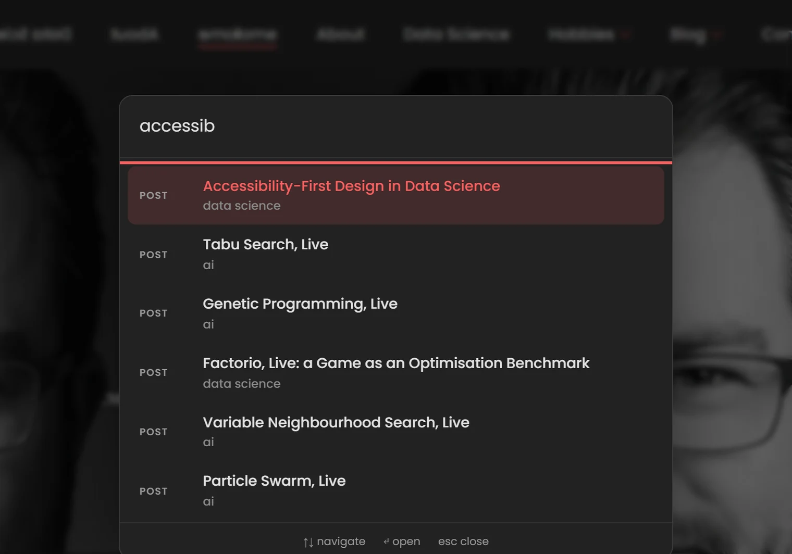
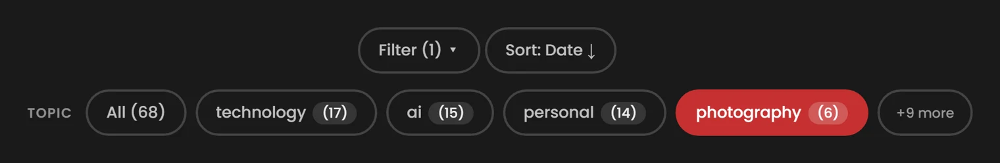
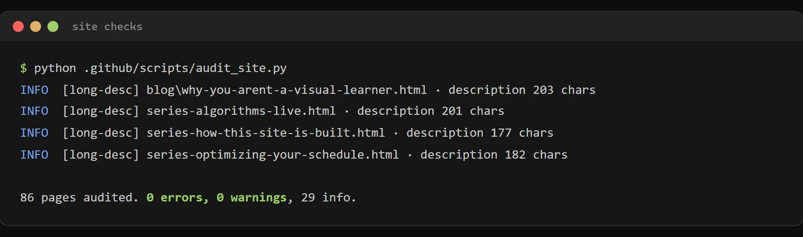

Technology · · 6 min read
Making This Website Accessible
Thirty small habits keep this site accessible: a skip link, screen-reader notes on new-tab links, reduced-motion fallbacks, and an audit that catches the many that I forget along the way.
Photograph © Ken Reid
Making This Website Accessible
I have banged on before about accessibility working best as a starting constraint rather than a retrofit. This site is where I get to practise that habit continually: my core philosophy is that if something is inaccessible to some it may as well be inaccessible to all. I make sure of this with a pile of small habits, and an audit script that catches the bits I inevitably miss. Part of the series on how this site is built.
Quick jargon guide
- Screen reader: software that reads a page aloud (or to a braille display) for blind and low-vision users, navigating by headings, links, and landmarks rather than by looking.
- WCAG: the Web Content Accessibility Guidelines, the standard everyone measures against. Its techniques have catalogue numbers, like items at IKEA.
- ARIA attributes: HTML attributes (
aria-pressed,aria-label,aria-live) that tell assistive technology what a widget is and what state it's in when the visuals alone can't. - sr-only: a CSS class that hides text visually but leaves it for screen readers. The inverse of decoration.
- Skip link: a link at the very top of the page, visible only when focused, that jumps keyboard users past the navigation to the content.
- Reduced motion: an operating-system setting (
prefers-reduced-motion) that asks websites to calm down with the animations. Vestibular disorders make this a health feature, not a taste. - Focus trap: keeping keyboard focus inside an open dialog so Tab doesn't wander off into the page behind it.
The keyboard path
The first element injected into every page is what is known as a skip link. Press Tab on any page here and "Skip to main content" appears before anything else. In short, this allows you to press Enter and get past any navigation fluff at the top of the page. It's invisible to mouse users, and is an old trick that is often forgotten in 'modern' websites.

The Ctrl+K command palette got the full dialog treatment: focus moves into the input when it opens, Tab is trapped (it moves the selection instead of escaping the dialog), Escape closes it, and results are given to screen readers through an aria-live region. The filter buttons on the blog and gallery use aria-pressed, so "Photography, toggle button, pressed" comes through instead of a mystery link.


The theme toggle swaps its label between "Switch to light mode" and "Switch to dark mode", so the button always says what it will do, not what it did. It has no aria-pressed, on purpose: a label that changes plus a pressed state gets read out as "Switch to light mode, toggle button, pressed", which leaves you to work out whether pressed means light or dark.
The screen reader path
Links that open a new tab get a screen-reader-only annotation, WCAG technique G201, applied automatically:
// Appends screen-reader-only "(opens in new tab)" to target="_blank" links
var span = document.createElement('span');
span.className = 'sr-only';
span.textContent = ' (opens in new tab)';
link.appendChild(span);A MutationObserver reapplies it to links injected later (related posts, footers), because on this site half the content arrives after first paint. For a screen reader user, a link that teleports you into a new tab with no warning is awful.
Images carry real alternative text - I imagine not having it feels almost painful for screen-reader users, they likely feel they're missing out on important content and don't know what it is, like missing pages in a book. I aim for a description, not caption: the photo of my dog is "A picture of my puppy, Brutus", and the chart images in data posts describe the actual bars and numbers, so the information is actually useful, instead of "a photo" or "the results shown as an image". The interactive posts give every canvas role="img" and an aria-label saying what the simulation shows. A label is a thin substitute for "here is a live algorithm race you cannot see", so I'm open to suggestions on how to make it a better experience.
The vestibular path
Every script that moves something checks prefers-reduced-motion (eight of them at the last count), and the stylesheet has 28 media blocks for it. The section headings that rise into place as you scroll are pure CSS (animation-timeline: view()), and with reduced motion on they just appear, already visible, as does the script fallback for browsers without it. The homepage stats display their final number instead of counting up. The interactive demos mount paused, the carousels start paused, the hover sketches on the blog cards never load, the hero's evolving headline is drawn as plain type, and the theme switch cross-fades instead of washing across the page from the button. The site has to be complete with the animation subtracted, and only then is the animation allowed.
Checkpoints
Habits decay, so the audit script checks every page for the a11y basics (alt text, heading structure, link health, metadata) on every push, a contrast test checks every text colour and the focus ring against WCAG AA in both themes, and a headless browser presses Tab for real to make sure the focus ring shows up, measures the contrast on the rendered pages, and checks the demos work from a keyboard without flooding a screen reader. CI fails loudly when a new post shows how bad my memory is at maintaining these standards without a checklist. I love automating stuff, I'd rather put in extra effort early to save effort later.

I'd love to hear from an actual screen reader user. If you use assistive tech and something here fights you, the contact page works, and I fix reported things fast.
Common questions
It's just a blog why do you put in so much effort?
Reverse the question: what justifies publishing a public page some readers can't use? The effort is also smaller than it looks. Nearly everything above was under an hour of work, done once, and enforced by automation afterwards. The expensive version of accessibility is the retrofit.
Does dark mode count as accessibility?
For me, yes. I get headaches and my eyes burn when I look at bright screens. So avoiding the white flash matters most for people like me. For everyone else it's comfort.